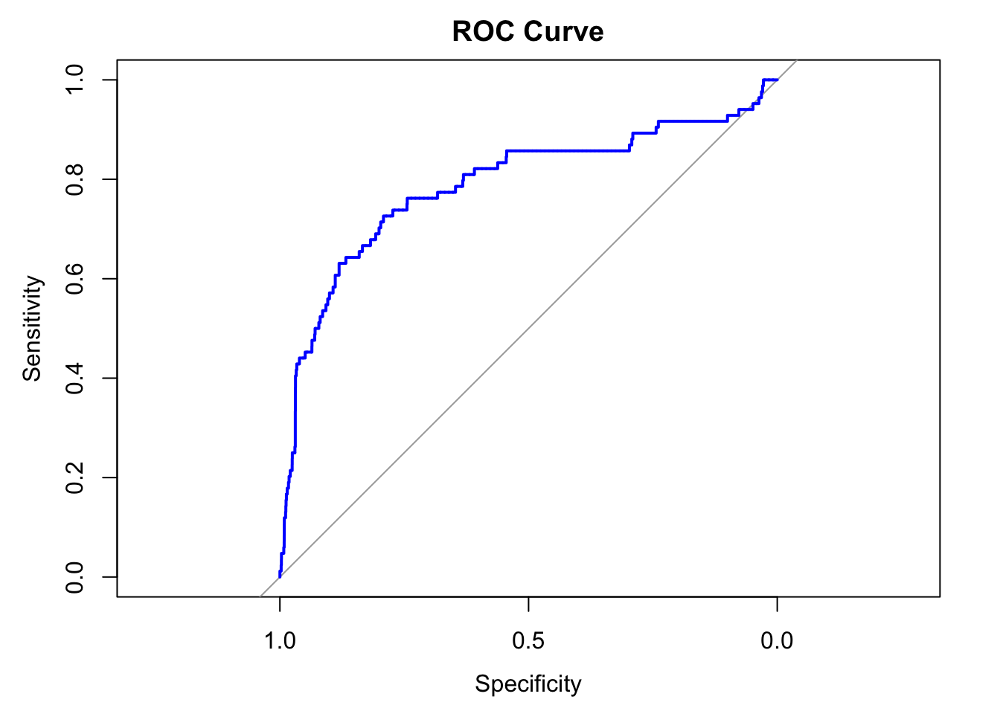

── Attaching core tidyverse packages ──────────────────────── tidyverse 2.0.0 ──
✔ dplyr 1.1.4 ✔ readr 2.1.5
✔ forcats 1.0.0 ✔ stringr 1.5.1
✔ ggplot2 3.5.1 ✔ tibble 3.2.1
✔ lubridate 1.9.3 ✔ tidyr 1.3.1
✔ purrr 1.0.2
── Conflicts ────────────────────────────────────────── tidyverse_conflicts() ──
✖ dplyr::filter() masks stats::filter()
✖ dplyr::lag() masks stats::lag()
ℹ Use the conflicted package (<http://conflicted.r-lib.org/>) to force all conflicts to become errors
library(survival)library(dplyr)
Data Manipulation
Import the data
setwd("/Users/theodruilhe/Documents/M2_D3S/scoring_project")# Import Xfile_path <-file.path("data", "our_data", "X.rds")if (file.exists(file_path)) { X <-readRDS(file_path)} else {print("File not found. Please check the file path.")}# import target_Yfile_path <-file.path("data", "our_data", "target_Y.rds")if (file.exists(file_path)) { y <-readRDS(file_path)} else {print("File not found. Please check the file path.")}
Create an new ID for the join
X <- X %>%mutate(ID =paste(gvkey, fyear, sep ="_"))y <- y %>%mutate(ID =paste(gvkey, fyear, sep ="_"))
Join the two data set
# Perform the inner joindata <- y %>%inner_join(X, by =c("ID"="ID"))
Warning in inner_join(., X, by = c(ID = "ID")): Detected an unexpected many-to-many relationship between `x` and `y`.
ℹ Row 79 of `x` matches multiple rows in `y`.
ℹ Row 3034 of `y` matches multiple rows in `x`.
ℹ If a many-to-many relationship is expected, set `relationship =
"many-to-many"` to silence this warning.
We apply the same technique as Shumway to deal with extreme values. Specifically: 1. Values above the 99th percentile of each variable are capped (set) to the 99th percentile value. 2. Values below the 1st percentile of each variable are floored (set) to the 1st percentile value.
# Function to truncate values at 1st and 99th percentilestruncate_outliers <-function(column) { p1 <-quantile(column, 0.01, na.rm =TRUE) # 1st percentile p99 <-quantile(column, 0.99, na.rm =TRUE) # 99th percentile column <-ifelse(column < p1, p1, column) # Floor at 1st percentile column <-ifelse(column > p99, p99, column) # Cap at 99th percentilereturn(column)}# Apply truncation to all numeric columns except Ydata <- data %>%mutate(across(where(is.numeric) &!all_of("Y"), truncate_outliers))
Missing values processing
# Check for missing values and give the proportion of missing values by columnmissing_values <- data %>%summarise(across(everything(), ~sum(is.na(.)) /n())) %>%gather() %>%arrange(desc(value))# Print missing valuesprint(missing_values)
The C-index measures the model’s ability to rank survival times correctly.
# Concordance indexcox_summary <-summary(cox_model)c_index <- cox_summary$concordance[1] # First element of concordance contains the C-indexcat("Concordance Index (C-Index):", c_index, "\n")
Concordance Index (C-Index): 0.7957899
risk scores (linear predictors) to use them for stratification or classification
# Compute risk scoresrisk_scores <-predict(cox_model, type ="risk")# Add risk scores to the datasetdf <- df %>%mutate(risk_score = risk_scores)
If we dichotomize the risk (e.g., high vs. low risk based on the median risk score), you can compute confusion matrices.
# Dichotomize risk scores: high risk (1) vs. low risk (0) based on the medianthreshold <-median(risk_scores)df <- df %>%mutate(predicted_status =ifelse(risk_score > threshold, 1, 0))# Create confusion matrixlibrary(caret)
Loading required package: lattice
Attaching package: 'caret'
The following object is masked from 'package:survival':
cluster
The following object is masked from 'package:purrr':
lift
# Step 5: Evaluate the Model on Test Data# Predict probabilities for the test settest_data <- test_data %>%mutate(predicted_prob =predict(logistic_model, newdata = ., type ="response"))# Create predictions based on a cutoff (e.g., 0.5)test_data <- test_data %>%mutate(predicted_class =ifelse(predicted_prob >0.5, 1, 0))# Step 6: Model Evaluation Metrics# Confusion Matrixconfusion_matrix <-table(test_data$predicted_class, test_data$Y)print("Confusion Matrix:")
# ROC Curve and AUCroc_curve <-roc(test_data$Y, test_data$predicted_prob)
Setting levels: control = 0, case = 1
Setting direction: controls < cases
print(paste("AUC:", round(auc(roc_curve), 4)))
[1] "AUC: 0.7881"
plot(roc_curve, col ="blue", main ="ROC Curve")

Task 3:
Classic K-fold Cross-Validation randomly splits the data into k folds, which is appropriate for independent and identically distributed (i.i.d.) data. However, time series data like yours (structured as firm-year observations) often exhibits temporal dependency: outcomes in one period can depend on past periods. Random splits would violate the temporal ordering and could lead to data leakage, where future information influences training.
Instead, Time Series Cross-Validation (Walk Forward Validation) respects the temporal structure by ensuring that each training set includes only observations up to the prediction period. This method simulates a real-world scenario where only past data is available for forecasting.
# Step 1: Prepare datadata <- data_cleaned# Step 2: Sort data by firm (gvkey) and year (fyear) to respect temporal structuredata <- data %>%arrange(gvkey, fyear)# Step 3: Define Time Series Cross-Validation (Walk Forward Scheme)# Create custom indices for training and testingtime_series_cv <-function(data, n_splits) { indices <-list() n <-nrow(data) split_size <-floor(n / (n_splits +1)) # Calculate split sizefor (i in1:n_splits) { train_end <- split_size * i # End index for training test_start <- train_end +1 test_end <- test_start + split_size -1if (test_end > n) break# Ensure test indices stay within range train_indices <-seq(1, train_end) test_indices <-seq(test_start, test_end) indices[[i]] <-list(train = train_indices, test = test_indices) } indices}# Create 5 splits for time series CVn_splits <-5cv_indices <-time_series_cv(data, n_splits)
# Step 4: Perform Walk Forward Validationresults <-list()for (i inseq_along(cv_indices)) {# Get train and test data train_data <- data[cv_indices[[i]]$train, ] test_data <- data[cv_indices[[i]]$test, ]# Fit logistic regression model on training data logistic_model <-glm( Y ~ ROA + ROE + net_profit_margin + asset_turnover + debt_to_equity + debt_ratio + PE_ratio + market_to_book + operating_cash_flow_to_debt + free_cash_flow_to_sales + ebitda_margin + roic + leverage, family =binomial(link ="logit"),data = train_data )# Predict probabilities on test data test_data <- test_data %>%mutate(predicted_prob =predict(logistic_model, newdata = ., type ="response"),predicted_class =ifelse(predicted_prob >0.5, 1, 0))# Evaluate model performance confusion_matrix <-table(test_data$predicted_class, test_data$Y) accuracy <-sum(diag(confusion_matrix)) /sum(confusion_matrix) roc_curve <-roc(test_data$Y, test_data$predicted_prob) auc <-auc(roc_curve)# Store results results[[i]] <-list(fold = i,accuracy = accuracy,auc = auc,confusion_matrix = confusion_matrix,roc_curve = roc_curve )}
Warning: glm.fit: fitted probabilities numerically 0 or 1 occurred
Setting levels: control = 0, case = 1
Setting direction: controls < cases
Warning: glm.fit: fitted probabilities numerically 0 or 1 occurred
Setting levels: control = 0, case = 1
Setting direction: controls < cases